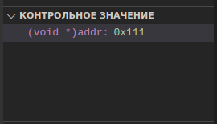

При отладке микроконтроллеров иногда удобнее видеть шестнадцатеричное значение int-переменной вместо того чтобы смотреть на целочисленное представление. Как это можно сделать в PlatformIO?
Во-первых надо сказать, что из-за оптимизаций (например при использовании inline-функций) значение переменной не всегда можно увидеть. Тут уж ничего не поделаешь и придется модификатор "инлайновости" убирать. Так же нужно проверить, с какими опциями компилируется debug-сборка. Если оптими
Увидеть отлаживаемую переменную можно в раскрывающейся области "Контрольное значение". Нажав на плюсик [+] можно добавить еще одну переменную (кстати, можно добавлять выражения). После нажатия плюсика надо просто ввести имя переменной. Или можно выделить имя переменной, нажать правую кнопку мыши, и в контекстном меню выбрать "Добавить контрольное значение".
Чтобы отлаживаемая переменная отображалась в HEX-нотации, необходимо перед именем переменной написать (void *), вот так:

В данном пример addr - это имя int-переменной.
Вообще, PlatformIO поддерживает следующие форматы:
Currently, VSCode does not provide an API to change the value format of watchpoints. You can manually cast watchpoint expressions to display the value as specific pointer types:
Видно, что можно отображать не только int-значения, но и разыменовывать указатели в HEX-представление, и даже указатели на указатели.